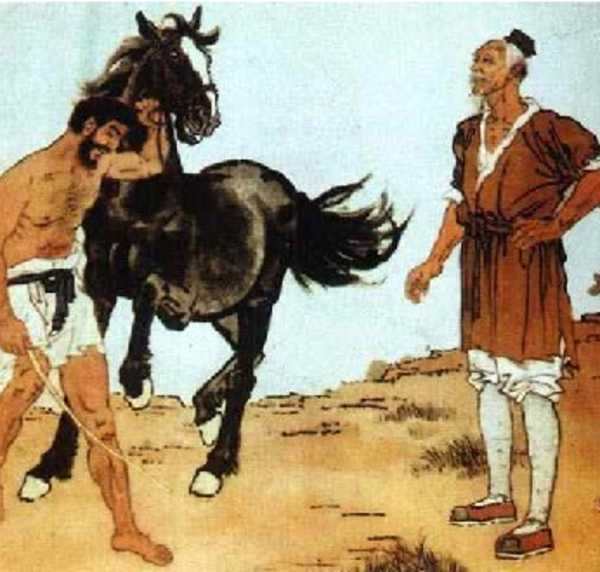
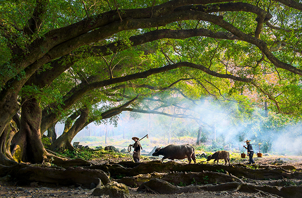

The story Once upon a time there was a Chinese farmer whose horse ran
away. That evening, all of his neighbors came around to commiserate.
They said,
We are so sorry to hear your horse has run away. This is most
unfortunate.
The farmer said, Maybe.

The next day the horse came back bringing seven wild horses with it,
and in the evening everybody came back and said, ,Oh, isn’t that lucky. What a great turn of events. You now have
eight horses!
The farmer again said, Maybe.
The following day his son tried to break one of the horses, and while
riding it, he was thrown and broke his leg. The neighbors then said,
Oh dear, that’s too bad,
and the
farmer responded, Maybe.

The next day the conscription officers came around to conscript people
into the army, and they rejected his son because he had a broken leg.
Again all the neighbors came around and said,
Isn’t that great!
Again, he said, Maybe.
The whole process of nature is an integrated process of immense complexity, and it’s really impossible to tell whether anything that happens in it is good or bad — because you never know what will be the consequence of the misfortune; or, you never know what will be the consequences of good fortune.
| Event | good or bad |
|---|---|
| Lose a horse | Maybe. |
| Win more horses | Maybe. |
| Son injury | Maybe. |
| Avoid war | Maybe. |
Conclusion
Good and Bad are just one perspective. Bananas are good for monkeys, but monkeys are not good for bananas. Let's not make a big deal out of it...
Interested in knowing more about Allan Watts: Allan Watts Wiki Video